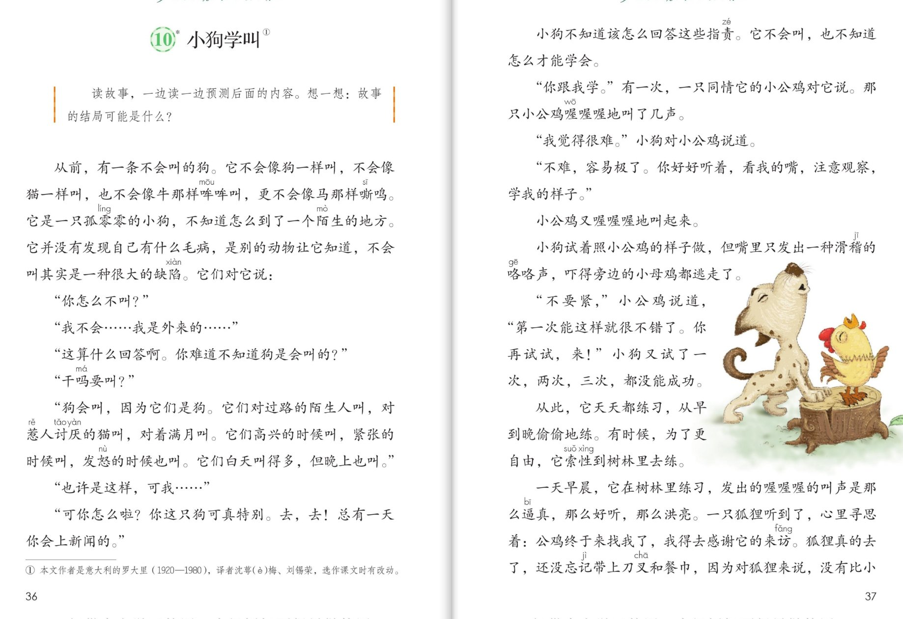
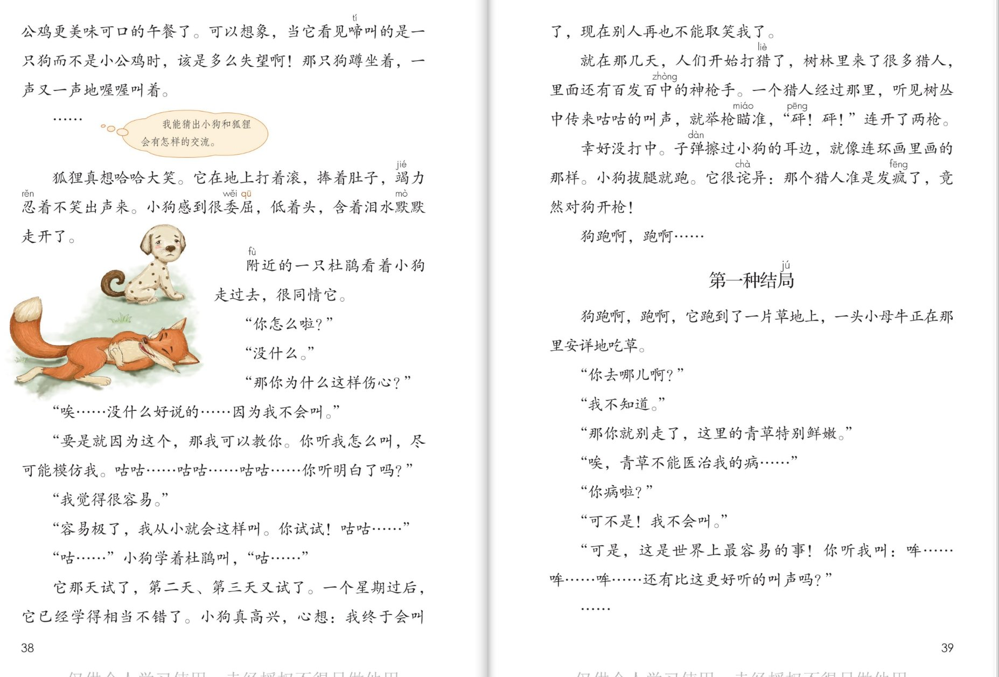
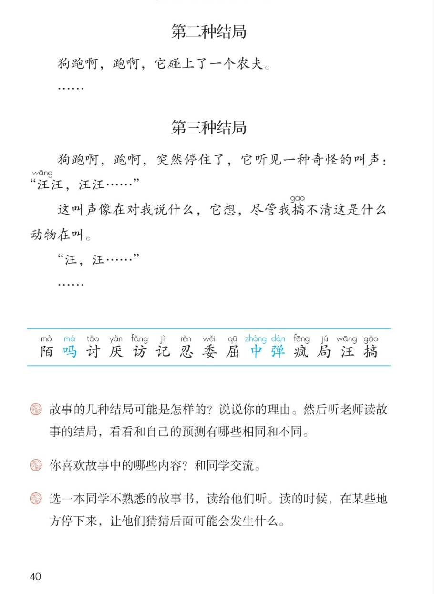

×
🔊 手机听不到声音怎么办？
① 先把手机
媒体音量调大 ，确认没开静音、没连蓝牙耳机；在微信里打开的，点右上角「⋯ → 用浏览器打开」。
② 还是没声音？到应用商店免费下载
Microsoft Edge 浏览器 （它自带朗读发声），用它打开本页面就能出声。
③ 换了 Edge 仍然没声音，说明这部手机的
硬件/系统不支持 网页朗读（多为老旧机型）；近几年买的新手机一般都能正常播放。
→ 打开声音自检
🐕 第 10 课《小狗学叫》· 有声图文带读
统编版语文 · 第三单元·阅读（略读课） · 课本 P36~40 · 作者：[意大利]罗大里 · 素养升级版（对标 2022 课标第二学段）
课文 50 段（含 3 个结局标题）
素养目标 4
会认字 15 （略读只认不写）
听写词 12
结局 3 种（都没写完！）
深入理解 8 题
本课本领 一边读一边预测
🎧 这样学（可随时点任意一句、一个字、一个词单独听）： ① 听读课文 ——一句一句读，读到哪一句哪一句发光；一边读一边猜：接下来会发生什么？② 学字词 ——15 个会认字（略读课只要求认读），点一个读一个。③ 词语·听写 ——听写 12 个课文词（读两遍→你写→报答案→听示范句），再听 4 组近义词辨析。④ 深入理解 ——8 道题（认知 / 理解 / 运用 / 拓展），先想后看。⑤ 分角色朗读 ——旁白、小狗、小公鸡、杜鹃、小母牛，读出各自的神气。🌟 本课特别任务：课本给了三种结局的开头，全停在省略号里——结局是什么，由你来猜（先猜，再听老师读）！
📌 本单元语文要素 ——阅读：预测 。单元导语（P27 照录）：猜测与推想，使我们的阅读之旅充满了乐趣 ；要点：了解预测的基本方法并尝试运用 ；尝试续编故事 。略读课 ：生字只要求认读，不要求书写；要自己读，自己想，自己猜。三种结局的开头 ，全都停在省略号里——先猜结局，再听老师读 （课后题②）。
🀄 文化自信
🀄 文化自信
读意大利经典童话《小狗学叫》，感受世界儿童文学的幽默与智慧，开阔阅读视野。
🗣 语言运用
🗣 语言运用
认读 15 个生字；积累拟声词（喔喔喔、咕咕、哞哞、汪汪）和“那么…那么…”等新鲜句式。
💡 思维能力
💡 思维能力
一边读一边预测结局：借助省略号、重复的情节和人物特点作依据，听结局后对照验证、修正。
🎨 审美创造
🎨 审美创造
边读边想象小狗学叫的画面，为故事续编自己的结局，体验预测与创造的乐趣。
点段前的 ①②③ 听整段；黄框是课本列出的结局标题
🔁 跟读模式：关
👁 隐藏注音（自测用）
字卡上的拼音标的是本课要认的字，读音来自课本生字表
🎤 朗读要求（老师标准） 不添字、不漏字 ；不出声、不指读 ，一边读一边预测 ；各自的神气 ：小公鸡热心，杜鹃温和，小狗委屈又坚定；省略号 就停下来猜一猜 ，再验证自己的猜测。
📖 略读课导语（照录 P36） ：一边读一边预测 后面的内容。想一想：故事的结局可能是什么？
🤫 默读小提示（边默读边预测） 听读 ——点句子听老师读；第二步 默读 ——不出声、不指读，读到关键处停下来猜一猜 ：接下来会发生什么；第三步 验证 ——接着读，猜错了就修正想法 接着猜。
①
从前，有一条不会叫的狗。
它不会像狗一样叫，不会像猫一样叫，也不会像牛那样哞哞叫，更不会像马那样嘶鸣。
它是一只孤零零的小狗，不知道怎么到了一个陌生的地方。
它并没有发现自己有什么毛病，是别的动物让它知道，不会叫其实是一种很大的缺陷。
它们对它说：
📌 这一段讲：一条不会叫的小狗，别的动物指出这是很大的缺陷。
②
“你怎么不叫？”
📌 这一段讲：动物们问它：你怎么不叫。
③
“我不会……我是外来的……”
📌 这一段讲：小狗为难地回答：我是外来的。
④
“这算什么回答啊。你难道不知道狗是会叫的？”
📌 这一段讲：动物们责问：你难道不知道狗是会叫的。
⑤
“干吗要叫？”
📌 这一段讲：小狗反问：干吗要叫。
⑥
“狗会叫，因为它们是狗。
它们对过路的陌生人叫，对讨厌的猫叫，对着满月叫。
它们高兴的时候叫，紧张的时候叫，发怒的时候也叫。
它们白天叫得多，但晚上也叫。”
📌 这一段讲：动物们讲狗为什么要叫：高兴叫，紧张叫，发怒也叫。
⑦
“也许是这样，可我……”
📌 这一段讲：小狗说不出话来。
⑧
“可你怎么啦？你这只狗可真特别。去，去！总有一天你会上新闻的。”
📌 这一段讲：动物们嫌它特别，把它赶走了。
⑨
小狗不知道该怎么回答这些指责。它不会叫，也不知道怎么才能学会。
📌 这一段讲：小狗不会叫，也不知道怎么才能学会。
⑩
“你跟我学。”有一次，一只同情它的小公鸡对它说。
那只小公鸡喔喔喔地叫了几声。
📌 这一段讲：小公鸡愿意教它，喔喔喔地示范。
⑪
“我觉得很难。”小狗对小公鸡说道。
📌 这一段讲：小狗觉得很难。
⑫
“不难，容易极了。你好好听着，看我的嘴，注意观察，学我的样子。”
📌 这一段讲：小公鸡教它：看我的嘴，注意观察。
⑬
小公鸡又喔喔喔地叫起来。
📌 这一段讲：小公鸡又叫起来。
⑭
小狗试着照小公鸡的样子做，但嘴里只发出一种滑稽的咯咯声，吓得旁边的小母鸡都逃走了。
📌 这一段讲：小狗只发出咯咯声，吓跑了小母鸡。
⑮
“不要紧，”小公鸡说道，“第一次能这样就很不错了。你再试试，来！”
小狗又试了一次，两次，三次，都没能成功。
📌 这一段讲：小公鸡鼓励它再试，试了三次都没成功。
⑯
从此，它天天都练习，从早到晚偷偷地练。
有时候，为了更自由，它索性到树林里去练。
📌 这一段讲：小狗天天偷偷练习，后来到树林里去练。
⑰
一天早晨，它在树林里练习，发出的喔喔喔的叫声是那么逼真，那么好听，那么洪亮。
一只狐狸听到了，心里寻思着：公鸡终于来找我啦，我得去感谢它的来访。
狐狸真的去了，还没忘记带上刀叉和餐巾，因为对狐狸来说，没有比小公鸡更美味可口的午餐了。
可以想象，当它看见啼叫的是一只狗而不是小公鸡时，该是多么失望啊！
那只狗蹲坐着，一声又一声地喔喔叫着。
📌 这一段讲：小狗喔喔叫得很逼真，狐狸当成了公鸡，寻来大失所望。
⑱
……
📌 这一段讲：（省略号——狐狸会怎么样？你来预测。）
⑲
狐狸真想哈哈大笑。它在地上打着滚，捧着肚子，竭力忍着不笑出声来。
小狗感到很委屈，低着头，含着泪水默默走开了。
📌 这一段讲：狐狸笑得打滚，小狗委屈地走开了。
⑳
附近的一只杜鹃看着小狗走过去，很同情它。
📌 这一段讲：杜鹃很同情小狗。
㉑
“你怎么啦？”
📌 这一段讲：杜鹃问它怎么了。
㉓
“那你为什么这样伤心？”
📌 这一段讲：杜鹃问它为什么伤心。
㉔
“唉……没什么好说的……因为我不会叫。”
📌 这一段讲：小狗难过地说出原因：我不会叫。
㉕
“要就是因为这个，那我可以教你。你听我怎么叫，尽可能模仿我。咕咕……咕咕……咕咕……你听明白了吗？”
📌 这一段讲：杜鹃愿意教它咕咕叫。
㉖
“我觉得很容易。”
📌 这一段讲：小狗觉得很容易。
㉗
“容易极了，我从小就会这样叫。你试试！咕咕……”
📌 这一段讲：杜鹃让它试试。
㉘
“咕……”小狗学着杜鹃叫，“咕……”
📌 这一段讲：小狗学咕咕叫。
㉙
它那天试了，第二天、第三天又试了。
一个星期过后，它已经学得相当不错了。小狗真高兴，心想：我终于会叫了，现在别人再也不能取笑我了。
📌 这一段讲：一个星期后学得不错，小狗终于会叫了。
㉚
就在那几天，人们开始打猎了，树林里来了很多猎人，里面还有百发百中的神枪手。
一个猎人经过那里，听见树丛中传来咕咕的叫声，就举枪瞄准，“砰！砰！”连开了两枪。
📌 这一段讲：猎人听见咕咕声，举枪连开两枪。
㉛
幸好没打中。
子弹擦过小狗的耳边，就像连环画里画的那样。
小狗拔腿就跑。
它很诧异：那个猎人准是发疯了，竟然对狗开枪！
📌 这一段讲：没打中，小狗诧异地拔腿就跑。
㉜
狗跑啊，跑啊……
📌 这一段讲：狗跑啊，跑啊……
◆
第一种结局
📌 这一段讲：课本只给出这个结局的开头——后面的故事由你来预测。
㉝
狗跑啊，跑啊，它跑到了一片草地上，一头小母牛正在那里安详地吃草。
📌 这一段讲：第一种结局的开头：跑到草地，遇见小母牛。
㉞
“你去哪儿啊？”
📌 这一段讲：小母牛问它去哪儿。
㊱
“那你就别走了，这里的青草特别鲜嫩。”
📌 这一段讲：小母牛留它吃青草。
㊲
“唉，青草不能医治我的病……”
📌 这一段讲：小狗说青草不能医治它的病。
㊳
“你病啦？”
📌 这一段讲：小母牛问它病了吗。
㊴
“可不是！我不会叫。”
📌 这一段讲：小狗说出了心事：我不会叫。
㊵
“可是，这是世界上最容易的事！你听我叫：哞……哞……哞……还有比这更好听的叫声吗？”
📌 这一段讲：小母牛教它哞哞叫。
㊶
……
📌 这一段讲：（省略号——这个结局后来会怎样？你来预测。）
◆
第二种结局
📌 这一段讲：课本只给出这个结局的开头——后面的故事由你来预测。
㊷
狗跑啊，跑啊，它碰上了一个农夫。
📌 这一段讲：第二种结局的开头：碰上了一个农夫。
㊸
……
📌 这一段讲：（省略号——农夫会怎么做？你来预测。）
◆
第三种结局
📌 这一段讲：课本只给出这个结局的开头——后面的故事由你来预测。
㊹
狗跑啊，跑啊，突然停住了，它听见一种奇怪的叫声：“汪汪，汪汪……”
📌 这一段讲：第三种结局的开头：听见奇怪的汪汪声。
㊺
这叫声像在对我说什么，它想，尽管我搞不清这是什么动物在叫。
📌 这一段讲：小狗搞不清这是什么动物在叫。
㊼
……
📌 这一段讲：（全文停在省略号——小狗最后学会叫了吗？结局由你来续。）
🤔 想一想（点我可跳过）
双页宽图自动占整行

第 36~37 页 · 课文（上）

第 38~39 页 · 课文（下）· 三种结局

第 40 页 · 认字与练习
📖 人教版《语文》三年级上册 · 课本第 36~40 页 · 图片仅供个人学习，版权归人民教育出版社所有
📚 注释① 本文作者是意大利 的罗大里（1920—1980） ，译者沈宓（mì） ，选作课文时有改动。
点一个字，听读音、词语和在课文里的句子；吗/中/弹 是多音字
点一行，听读这一组词语
陌 陌生 陌路 阡陌
访 拜访 访问 家访
忍 忍住 忍耐 忍受
疯 发疯 疯狂 疯长
读两遍 → 你在纸上写 → 报答案 → 听示范句
准备听写 · 共 12 个词
○ ○ ○
点下面的「开始听写」，听到一个词就写一个词。
▶ 开始听写
🔁 再读一遍
👁 看答案
点词听读，点句子听示范句，再自己说一句
1 陌生 课文词
示范句：不知道怎么到了一个陌生的地方。
✏️ 我也能说：什么地方很陌生。
2 讨厌 课文词
示范句：它们对讨厌的猫叫。
✏️ 我也能说：对谁叫。
3 拜访 课文词
示范句：狐狸要去感谢公鸡的来访。
✏️ 我也能说：谁去拜访谁。
4 忍住 课文词
示范句：狐狸竭力忍着不笑出声来。
✏️ 我也能说：谁忍住了什么。
5 委屈 课文词
示范句：小狗感到很委屈，低着头走开了。
✏️ 我也能说：谁很委屈。
6 发疯 课文词
示范句：那个猎人准是发疯了。
✏️ 我也能说：谁发疯了。
7 结局 课文词
示范句：故事的结局可能是什么？
✏️ 我也能说：什么的结局。
8 孤零零 课文词
示范句：它是一只孤零零的小狗。
✏️ 我也能说：什么样的小狗。
9 滑稽 课文词
示范句：小狗发出一种滑稽的咯咯声。
✏️ 我也能说：什么很滑稽。
10 逼真 课文词
示范句：它的叫声是那么逼真。
✏️ 我也能说：什么叫声逼真。
11 洪亮 课文词
示范句：它的叫声那么好听，那么洪亮。
✏️ 我也能说：什么很洪亮。
12 取笑 课文词
示范句：现在别人再也不能取笑我了。
✏️ 我也能说：谁不再被取笑。
相同点 / 不一样在哪 / 各造一句
洪亮 — 响亮
相同：都表示声音大。
不一样：洪亮 多形容说话、叫声又大又清楚；响亮 偏重声音传得远。
洪亮：它的叫声那么好听，那么洪亮。
滑稽 — 可笑
相同：都表示让人觉得好笑。
不一样：滑稽 多指言行、样子有趣好笑（滑稽的咯咯声）；可笑 偏重让人觉得不对劲、好笑。
滑稽：小狗发出一种滑稽的咯咯声。
逼真 — 传神
相同：都表示像真的一样。
不一样：逼真 多形容声音、画像极像真的；传神 多形容把神态表现出来了。
逼真：小狗学公鸡叫学得很逼真。
诧异 — 惊讶
相同：都表示觉得奇怪、吃惊。
不一样：诧异 偏重心里想不明白；惊讶 偏重吃了一惊。
诧异：它很诧异，猎人竟然对狗开枪。
拟声词读得像一像
拟声词 喔喔喔 咯咯 咕咕 哞哞 汪汪 砰砰
三个“那么” 那么逼真 那么好听 那么洪亮
ABB式 孤零零 美滋滋 笑嘻嘻 静悄悄
预测用语 我猜… 我预测… 结局可能是… 我依据的是…
页边这位小读者在哪儿停下来的？
这一课的页边只有 1 条旁批 ——它出现在狐狸来访 处：猜人物之间会有怎样的交流，是预测的重要法宝。本课还有个天然法宝：课文里省略号特别多 ，每个省略号都是预测的“暂停键”！
💭 教材旁批（P38）
我能猜出小狗和狐狸会有怎样的交流。 ▸ 读到狐狸来访就停下来预测——猜人物之间的交流，是预测的重要法宝。
先自己做一做，再看深入理解的解析
✏️ 课后题②（P40 照录）
故事的几种结局可能是怎样的？说说你的理由。然后听老师读故事的结局，看看和自己的预测有哪些相同和不同。
✏️ 课后题③（P40 照录）
你喜欢故事中的哪些内容？和同学交流。
✏️ 课后题④（P40 照录）
选一本同学不熟悉的故事书，读给他们听。读的时候，在某些地方停下来，让他们猜猜后面可能会发生什么。
标「答案不唯一」的题，说得有道理都对
认知 略读课的导语给这个单元定了什么任务？（照录 P36 导语框）看解析
🤔 想一想
解析：
读故事，一边读一边预测后面的内容。想一想：故事的结局可能是什么？
🌈 答案不唯一，说得有道理都对
认知 故事讲了一件什么事？看解析
🤔 想一想
解析：
一条不会叫的狗，先后跟小公鸡学喔喔叫、跟杜鹃学咕咕叫，结果引来狐狸和猎人的枪子儿。狗跑啊跑啊，课本给出三种结局的开头——结局是什么，由你来猜。
🌈 答案不唯一，说得有道理都对
理解 小狗先后跟谁学叫？学的叫声引来了什么？看解析
🤔 想一想
解析：
跟小公鸡学喔喔叫——引来想吃公鸡的狐狸；跟杜鹃学咕咕叫——引来举枪的猎人。🌈 说出学的对象和引来的事就对。
🌈 答案不唯一，说得有道理都对
理解 狐狸为什么带上刀叉和餐巾？它见到小狗后怎么样？看解析
🤔 想一想
解析：
它把喔喔叫的小狗当成了小公鸡，想去吃美味的午餐；见到是狗不是鸡，大失所望，笑得在地上打滚——小狗委屈地走开了。🌈 联系课文说出理由就对。
🌈 答案不唯一，说得有道理都对
理解 课文为什么列出三种结局，而且每个结局都停在省略号里？（预测单元的妙处）看解析
🤔 想一想
解析：
课本故意不写完——把结局留给读者。每种结局的开头就是一个预测的“岔路口”：遇到小母牛、遇到农夫、听见汪汪声，接下来会怎样，每种都可能不同。🌈 答案不唯一。
🌈 答案不唯一，说得有道理都对
运用 故事的几种结局可能是怎样的？说说你的理由。（课后题②）看解析
🤔 想一想
解析：
示例：第一种结局里小狗可能学会哞哞叫，也可能听小母牛的话治好了“心病”；第二种结局里农夫可能收留它；第三种结局里汪汪声可能来自另一只狗，它终于跟同类学会了叫。🌈 只要说出理由就对——预测一定要有依据。
🌈 答案不唯一，说得有道理都对
运用 你喜欢故事中的哪些内容？和同学交流。（课后题③）看解析
🤔 想一想
解析：
示例：喜欢狐狸带刀叉和餐巾去“吃午餐”，写得又好笑又紧张；喜欢小狗一次次失败还不放弃。🌈 说出你喜欢的地方和原因就很好。
🌈 答案不唯一，说得有道理都对
拓展 选一本故事书读给同学听，在某些地方停下来让他们猜。（课后题④）看解析
🤔 想一想
解析：
像课文一样：选故事里可能有转折的地方停下来——听到的人猜一猜，你再读下去验证。你就是“预测小老师”！🌈 说出你打算在哪里停下来、为什么就更棒。
🌈 答案不唯一，说得有道理都对
💬 预测支架：被指责 （不会叫的缺陷）→ 跟小公鸡学 （引来狐狸）→ 跟杜鹃学 （引来枪声）→ 狗跑啊跑啊 → 三种结局 （都停在省略号里，等你来续）。每个省略号都是一个“暂停键”！
点一个角色，听他（她）的台词
🎭 旁白
从前，有一条不会叫的狗。它不会像狗一样叫，不会像猫一样叫，也不会像牛那样哞哞叫，更不会像马那样嘶鸣。 / 小狗又试了一次，两次，三次，都没能成功。 / 狗跑啊，跑啊……
💬 要读出人物语气 ：小公鸡热心，杜鹃温和，小狗委屈又坚定
🎭 小狗
我不会……我是外来的…… / 干吗要叫？ / 我觉得很难。 / 我觉得很容易。 / 唉……没什么好说的……因为我不会叫。
💬 要读出人物语气 ：小公鸡热心，杜鹃温和，小狗委屈又坚定
🎭 小公鸡
你跟我学。不难，容易极了。你好好听着，看我的嘴，注意观察，学我的样子。 / 不要紧，第一次能这样就很不错了。你再试试，来！
💬 要读出人物语气 ：小公鸡热心，杜鹃温和，小狗委屈又坚定
🎭 杜鹃
要就是因为这个，那我可以教你。你听我怎么叫，尽可能模仿我。咕咕……咕咕……咕咕……你听明白了吗？ / 容易极了，我从小就会这样叫。你试试！咕咕……
💬 要读出人物语气 ：小公鸡热心，杜鹃温和，小狗委屈又坚定
🎭 小母牛
你去哪儿啊？ / 那你就别走了，这里的青草特别鲜嫩。 / 可是，这是世界上最容易的事！你听我叫：哞……哞……哞……还有比这更好听的叫声吗？
💬 要读出人物语气 ：小公鸡热心，杜鹃温和，小狗委屈又坚定
每题给自己打 1~3 颗星
1. 我能正确认读 15 个会认字（略读课只认不写）。 ☆ ☆ ☆
2. 我能一边读一边预测，在省略号处停下来猜一猜。 ☆ ☆ ☆
3. 我能说出预测的依据：人物特点、重复的情节、生活经验。 ☆ ☆ ☆
4. 我能说出三种结局分别“卡”在哪里，并为每一种续编故事。 ☆ ☆ ☆
5. 我能说说小狗是一只怎样的小狗。 ☆ ☆ ☆
✍️ 小练笔 （衔接课后题②）：选一种结局接着往下写 ，或者自己再编第四种结局 （狗又遇到了谁？）。小狗的特点 （不会叫、不服输），让新朋友也像小公鸡、杜鹃一样热心教它 ；写完读给同学听，让大家猜猜你的结局是怎么来的 ——预测要有依据，续编也要有依据！